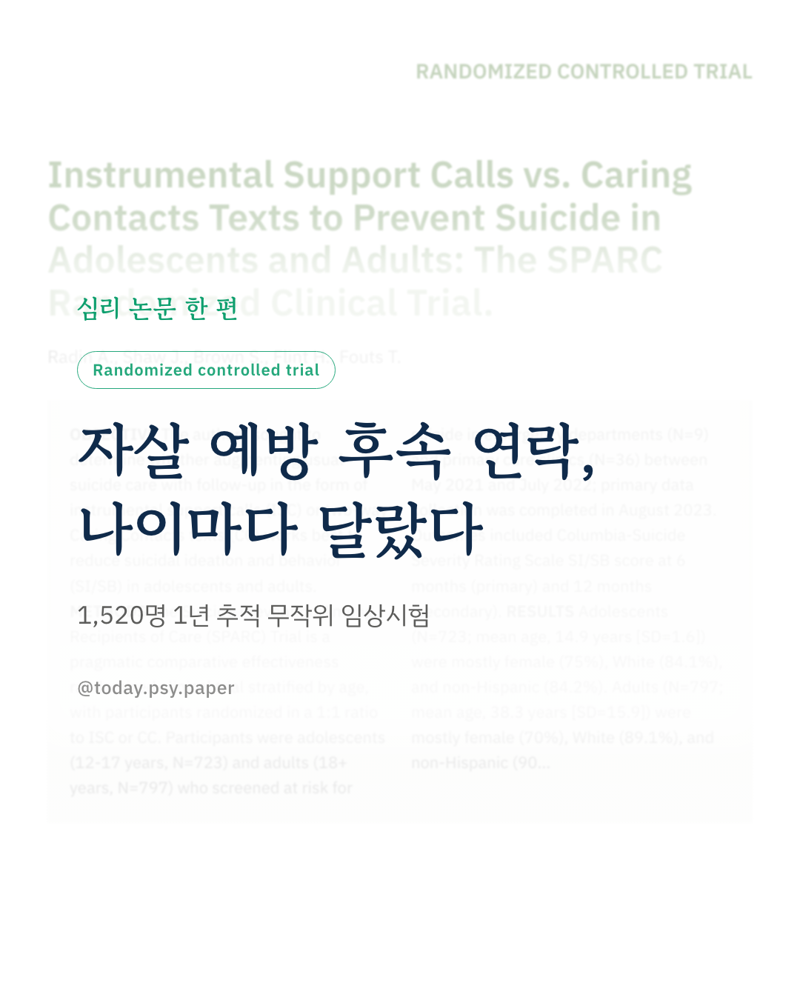
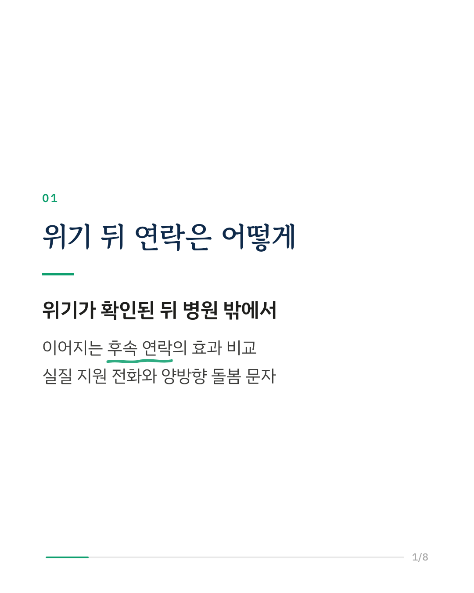
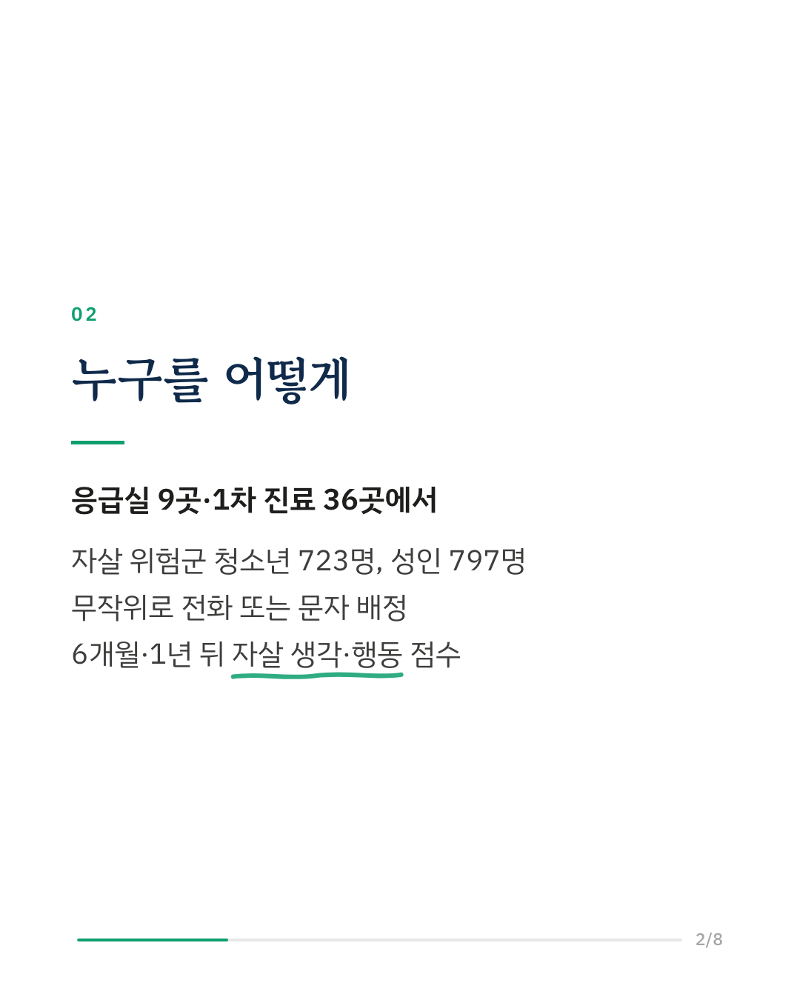
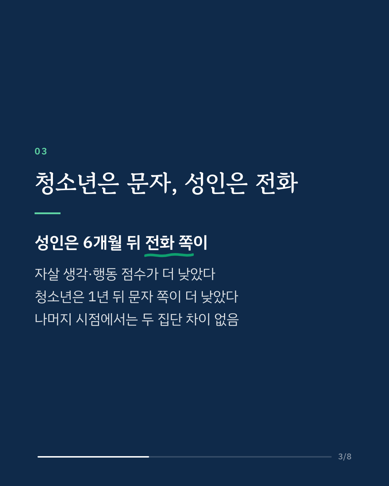
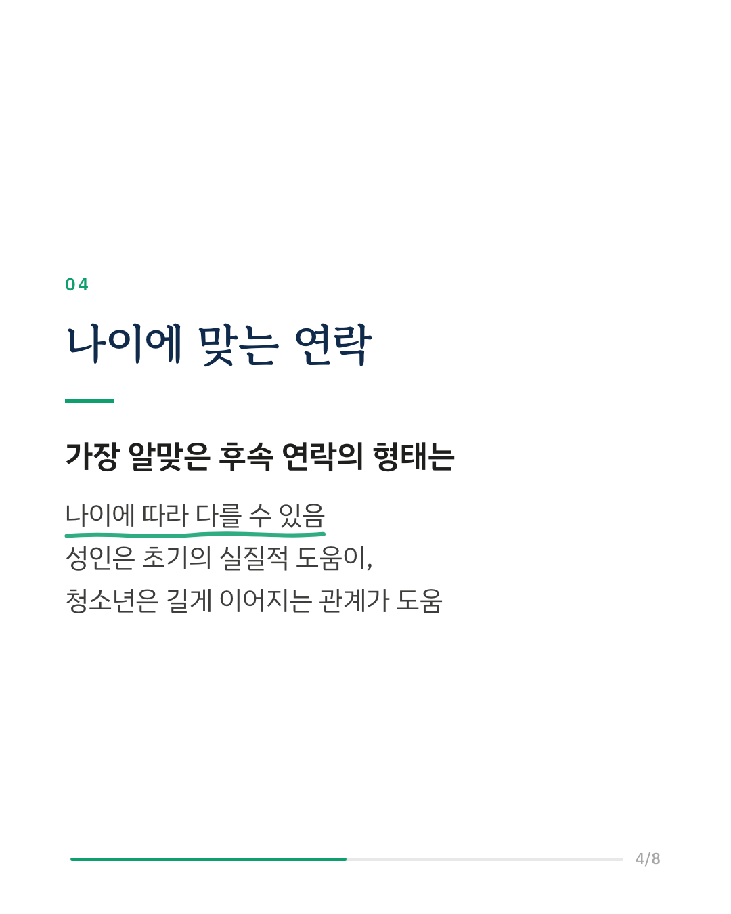
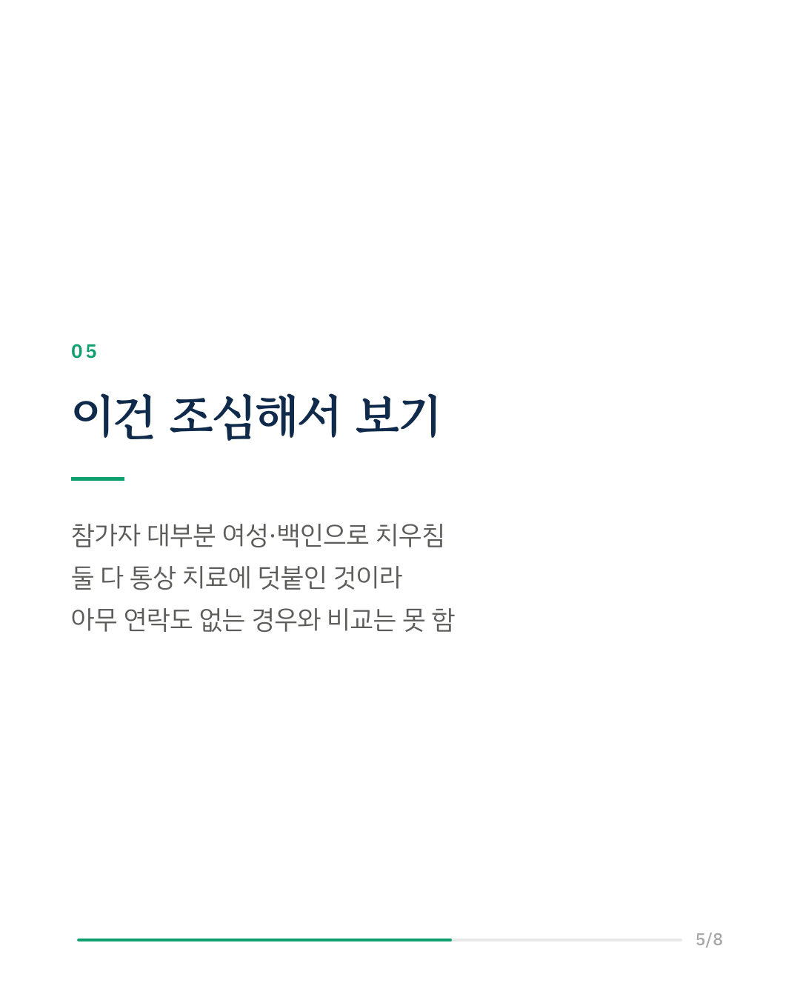
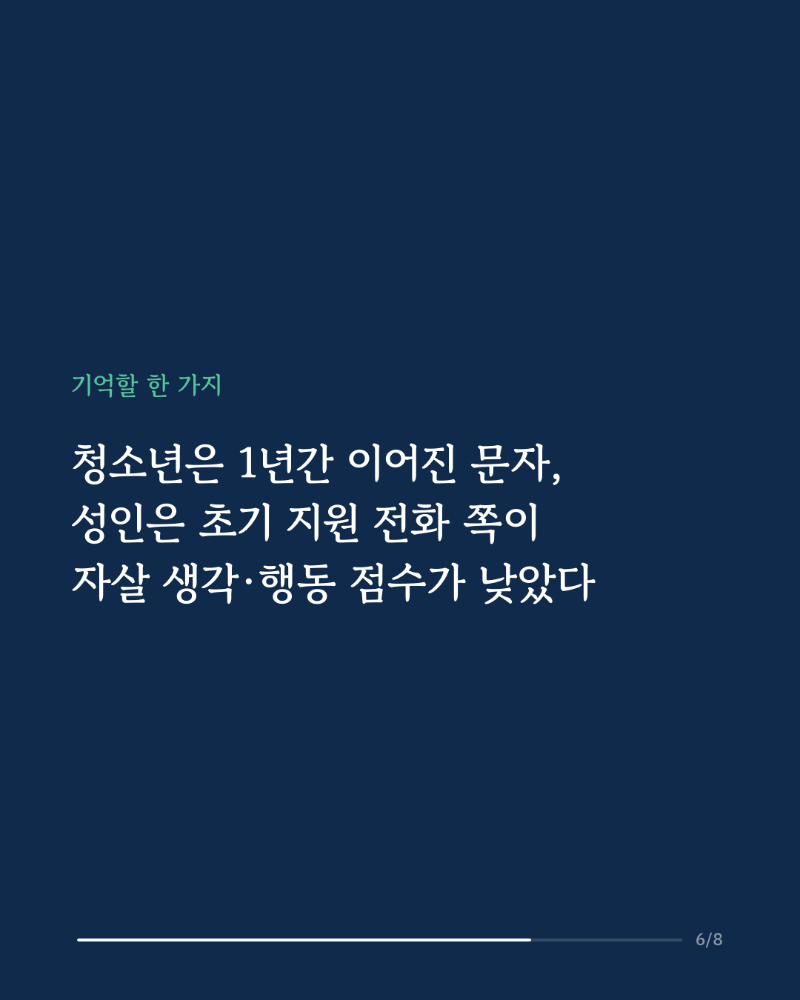
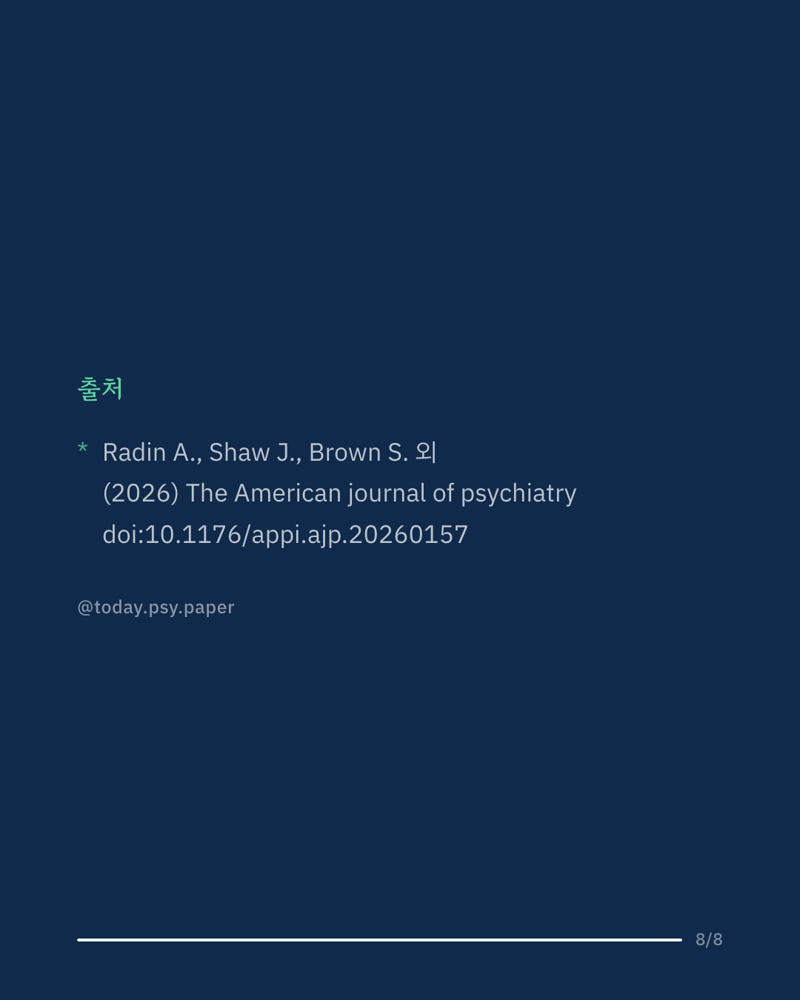

자살 예방에서는 응급실이나 진료실을 나선 뒤의 후속 연락이 중요하게 여겨집니다. 이 연구는 응급실 9곳과 1차 진료 36곳에서 자살 위험이 확인된 청소년 723명과 성인 797명을 무작위로 두 집단으로 나누어, 한쪽은 실질적인 도움을 주는 전화 지원을, 다른 한쪽은 안부를 묻고 답할 수 있는 양방향 돌봄 문자를 통상 치료에 더해 받게 했습니다. 그리고 6개월과 1년 뒤 자살 생각·행동 점수를 비교했습니다. 결과는 나이에 따라 달랐습니다. 성인은 6개월 시점에 전화 지원을 받은 쪽의 자살 생각·행동 점수가 문자 쪽보다 낮았습니다. 청소년은 반대로 1년 시점에 문자를 받은 쪽의 점수가 전화 쪽보다 낮았습니다. 그 밖의 시점에서는 두 집단 사이에 뚜렷한 차이가 없었습니다. 연구진은 가장 알맞은 후속 연락의 형태가 나이에 따라 다를 수 있다고 봅니다. 성인에게는 초기의 실질적 도움이, 청소년에게는 길게 이어지는 관계 중심의 연락이 더 맞을 수 있다고 해석합니다. 참가자 대부분이 여성과 백인이었고, 두 연락 모두 통상 치료에 더한 것이어서 아무 연락도 없는 경우와는 비교하지 않았습니다. The American Journal of Psychiatry (2026), 'Instrumental Support Calls vs. Caring Contacts Texts to Prevent Suicide in Adolescents and Adults: The SPARC Randomized Clinical Trial' 힘든 마음이 들 때는 자살예방상담전화 109, 정신건강상담전화 1577-0199에서 도움을 받을 수 있습니다. DOI: 10.1176/appi.ajp.20260157 #임상심리 #정신건강정보 #심리학연구 #논문리뷰 #자살예방 #청소년정신건강 #무작위임상시험
python3 publish.py 42946687